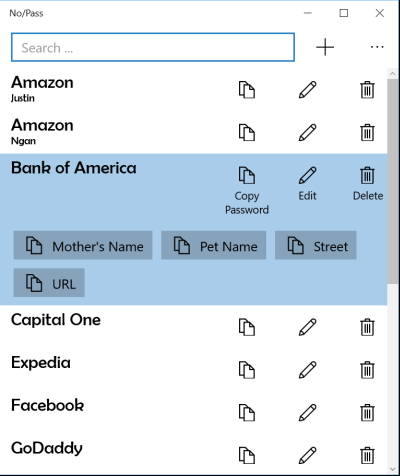
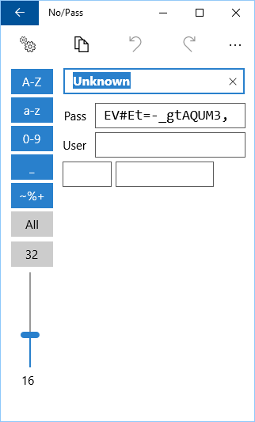
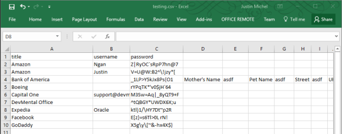
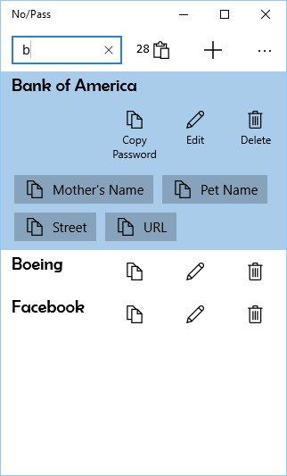
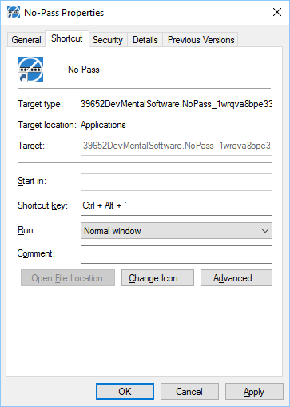

A simple, no-fuss password manager that prioritizes ease of use over complexity.

No/Pass was originally built as a UWP application for the Windows Store. The Windows Store version is no longer available, but we have a working WPF version and are considering porting it to Avalonia as a free, open-source, cross-platform password manager.
If you value simplicity in a password manager and would find this useful, please let us know.
Adding a new password is straightforward. A secure password is automatically generated using configurable rules — toggle which character types are allowed and drag the slider to set length.
Add optional name/value pairs for extra data like security questions or PINs. Each pair gets its own one-click copy button on the main screen.


If you have many passwords, create a simple CSV file in Excel with columns for title, username, and password. You can also include additional name/value pair columns.
Save as CSV and import directly into No/Pass.
Type a few letters to filter the list, use arrow keys to highlight, then press Enter to copy the password to the clipboard for 30 seconds. A countdown timer shows how long before the clipboard is automatically cleared.


Pin No/Pass to your start menu and taskbar. Drag it onto your desktop and assign a keyboard shortcut to the icon for instant access.